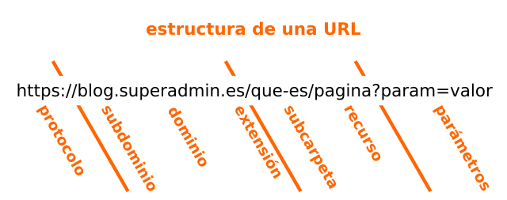

Mi nombre es José Manuel Medina Rodríguez, A01706212, soy estudiante de ITC y tengo 21 años, originalmente me uní a la carrera en el año 2019 pero por motivos administrativos me retrasé un año, el año adicional me permitió crecer en cuanto a experiencia y a conocimientos por lo que lo considero algo positivo, en cuanto a mi persona, soy alguien que considera que todo conocimiento es útil, considero que debemos saber de todo un poco, no en el sentido de ser «aprendíz de todo y capitán de nada», pero en el sentido de que debemos ser polímatas en nuestra vida.
En cuanto a experiencia puedo decir que estoy avanzado en la programación de C++, me sé mover en lenguajes como C#, LuaScript y Python, en éste último tuve la oportunidad de programar sistemas multiagentes utilizando el modulo MESA en la clase TC2008B, también hice uso del lenguaje R durante uno de mis cursos donde logré llegar a un dominio de lo básico, en el futuro quiero aprender ABAP, el lenguaje utilizado por SAP para abrir mis posibilidades de trabajo en dicha área.
Hablando en términos más personales, considero que el ejercicio es muy importante para una persona, igual considero que todos los deportes son buenos porque nos ayudan a desarrolar habilidades que utilizamos en nuestra vida diaria además del desarrollo del físico, una de las frases que considero más importantes es el probervio Chino: «civiliza la mente pero haz salvaje el cuerpo», con esta frase también quiero decir que para mí es muy importante el ejercitar la mente, lectura de filósofos, de libros pertinentes e incluso de una que otra historia de ficción pero sin despegar los pies de la tierra. En cuanto a mis pasatiempos, pues, la mayoría lo dije entre líneas, me gusta hacer ejercicio, rucking, leer, escribir entre otras cosas.
La «Internet» es la red de computadores interconectadas en las que trabaja la web y por donde viaja la información, mientras que la World Wide Web, W3 o WWW es donde se encuentran las páginas web a las que accedemos, podemos decir que internet equivale a la infraestructura mientras que la web es lo que viaja por dicha infraestructura y sin ella no podría funcionar.
La siguiente imagen lo describe muy bien: 
GET: El método GET solicita una representación de un recurso especificado, las solicitudes GET sólo deben obtener datos. HEAD: El método HEAD solicita una respuesta igual al método GET pero sin cuerpo de respuesta. POST: El método POST publica una entidad al recurso especificado, causando un cambio de estado o efectos en el servidor. PUT: El método PUT reemplaza todas las actuales representaciones del recurso objetivo con la carga útil solicitada. PATCH: El método PATCH aplica modificaciones parciales a un recurso. DELETE: El método DELETE elimina el recurso especificado.
Un método POST porque deseas enviar esa información, sin embargo, es muy recomendado utilizar HTTPS o SSL porque utilizando los métodos HTTP es muy fácil que una aplicación que está espiando pueda obtener esa información sensible.
Un método GET, pues sólo estamos solicitando el despliegue de los recursos de la página en nuestro navegador.
Una respuesta HTTP 200 significa que la solicitud fue exitosa, así que no ocurrió ningún error.
Depende, el error 404 significa que el recurso solicitado no fue encontrado, pero puede ser que en realidad el desarrollador no lo haya incluído o que el usuario ingresó a una dirección que no existe, quizá con errores en la escritura de dicha dirección.
Nuevamente depende, el error 500 significa que no se pudo realizar la solicitud de manera exitosa, en general los errores 500 son por parte de la conexión del usuario, pero puede ser que a veces ocurran por servidores intermediarios que no están respondiendo a las solicitudes.
Significa que no se recomienda su uso en HTML5 pero aún son reconocidos, algunos ejemplos son: BASEFRONT, CENTER, FONT, STRIKE.
Una de las diferencias más grandes es que HTML5 ya no depende de plug-ins de terceros como lo hacía en HTML4 para ciertas funciones (como Flash) ahora HTML5 cuenta con su propio soporte de multimedia, además es más simple en cuanto a su sintaxis y permite un mejor manejo de errores de código, además de ciertos cambios a etiquetas y a estructuras de tablas, en general fue un buen paso adelante para HTML.
La estructura general de una tabla requiere de la etiqueta «table», para darle formato necesitamos «tr = table row» y «td = table data», para dar más estilo necesitamos utilizar etiquetas como «thead», «th», «tbody», «colgroup» «style y span», a continuación un ejemplo:
| País | Capital | Población | Lenguaje |
|---|---|---|---|
| URSS | Moscú | 20,000,000 | Ruso |
| RDA | Berlín Oriental | 3,500,000 | Alemán |
Input, button, checkbox, radio, file, hidden, image, password, reset y submit. A continuación un ejemplo de un input y un button: Ahora un campo para texto hecho con input:
525 de 555 elementos, el navegador que utilizo es Ungoogled Chromium.
1. Definición de requerimientos. 2. Análisis y diseño. 3. Implementación y prueba de unidades. 4. Integración y prueba del sistema. 5. Operación y mantenimiento.
1. Planificación del concepto. 2. Definición de requisitos. 3. Diseña. 4. Fase del desarrollo y pruebas. 5. Puesta en marcha. 6. Operaciones y mantenimiento. 7. Disposición